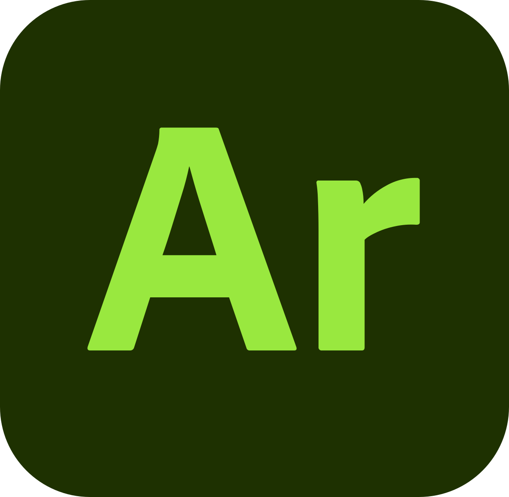

after experimenting with Lens Studio and Adobe Aero, I chose Aero. It's easier to use and isn't restricted by any app limitations, allowing for quick implementation of AR effects on-site.
I aim to create a virtual environment composed of animated text. My interest lies in integrating motion graphics design into AR, drawing inspiration from cases where AR is used for exhibition tours. Additionally, I enjoy modeling, such as this peculiar and quirky giant eye flower.


!!!!Love this Project!!!!!
!!!!wowowowowo!!!!!